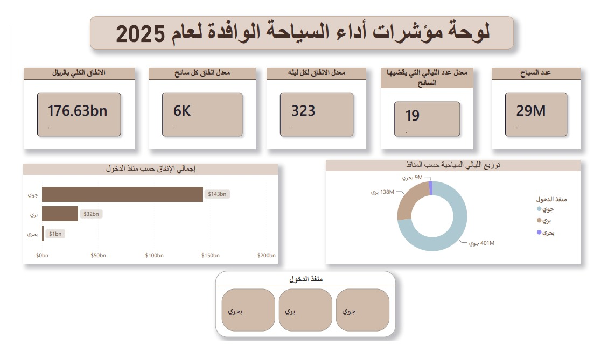
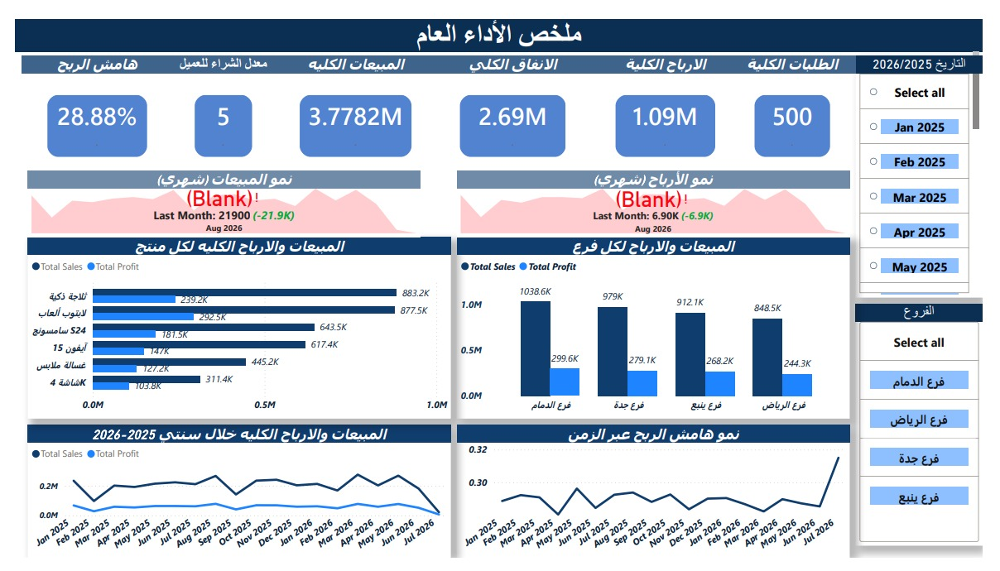
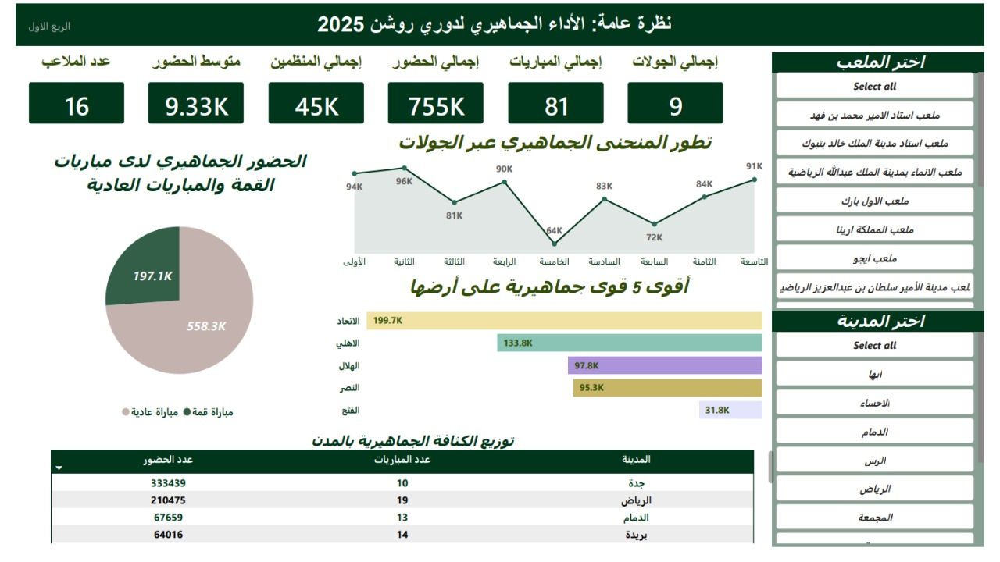

Data Analyst · Python · Power BI · SQL
بدأت رحلتي في عالم التقنية باستكشاف هندسة البرمجيات وبناء الأنظمة وقواعد البيانات، وهو ما منحني فهماً عميقاً لكيفية تحرك البيانات وهيكلتها من الداخل. قادني هذا الشغف نحو التخصص في مجال تحليل البيانات (Data Analysis)؛ حيث أدمج اليوم مهاراتي البرمجية مع تقنيات التحليل الذكي لتحويل البيانات الخام إلى مرئيات واستراتيجيات تدعم اتخاذ القرار.
محلل بيانات شغوف بفهم الأنماط الخفية داخل الأرقام. بدأت رحلتي في تطوير الويب والبرمجة الخلفية، ومن خلال بناء الأنظمة وقواعد البيانات اكتشفت أن أعظم قيمة تُضاف ليست في الكود — بل في ما تكشفه البيانات.
أدوات وتقنيات تحليل البيانات والبرمجة التي أعمل بها
مشاريع تحليل بيانات وتطوير ويب — من الفكرة إلى التنفيذ
تحليل شامل لمؤشرات أداء السياحة الوافدة لعام 2025، يرصد حجم التدفق الكلي للسياح وحجم الإنفاق الملياري عبر كافة المنافذ. يكشف التحليل أن المنفذ الجوي هو المحرك الاستراتيجي الأول للأداء المالي، فيما يمثل البري ركيزة استدامة قطاع الضيافة، ويُسجّل البحري مفاجأة رقمية في كثافة معدل الإقامة. بُني المشروع بـ Power BI لتحويل بيانات وزارة السياحة إلى رؤى استراتيجية تدعم اتخاذ القرار.


دورة حياة بيانات متكاملة لمتجر إلكترونيات — من هندسة قاعدة البيانات في SSMS وكتابة استعلامات SQL معقدة (Joins، CTEs، Aggregations)، إلى لوحة Power BI تكشف المنتجات الرابحة، أداء الفروع، وفرص التوسع الجغرافي. بُنيت بيانات اصطناعية (100 عميل، 500 طلب) لمحاكاة سيناريوهات واقعية.

تحليل الأداء الجماهيري والتشغيلي للربع الأول من دوري روشن 2025. استخدمت Power Query لمعالجة البيانات الخام وبناء أعمدة مخصصة للفرق. أبرز النتائج: جدة سجّلت 333K مشجع رغم 10 مباريات فقط، والجمعة يوم الذروة بـ 309K مشجع، وملعب الإنماء حقق أفضل كفاءة تشغيلية (منظم واحد لكل 21 مشجع).
منصة مجتمعية تربط الأفراد بمن يحتاجهم في أوقات الحاجة. بُنيت بـ Django مع قاعدة بيانات MySQL، وتهدف لإيجاد قطع الغيار المتوفرة في أحياء المدينة.
منصة مدونة شخصية مشابهة لتويتر — أنشر فيها مقالاتي وأفكاري مع نظام تعليقات متكامل وقاعدة بيانات SQLite. مستضافة على PythonAnywhere.
منصة إلكترونية شاملة تربط الحرفيين والمحلات التجارية بالعملاء، مع نظام بحث متقدم ولوحة تحكم Dashboard لإدارة الخدمات والحجوزات.
مسيرتي الأكاديمية والتقنية
تخصص في برمجة وتطوير الويب، يشمل هندسة البرمجيات، قواعد البيانات، تطوير الواجهات الأمامية والخلفية، وإدارة المشاريع التقنية.
هل لديك مشروع تحليل بيانات تريد تنفيذه؟
أو تريد فقط تقول مرحبا؟ أنا هنا!